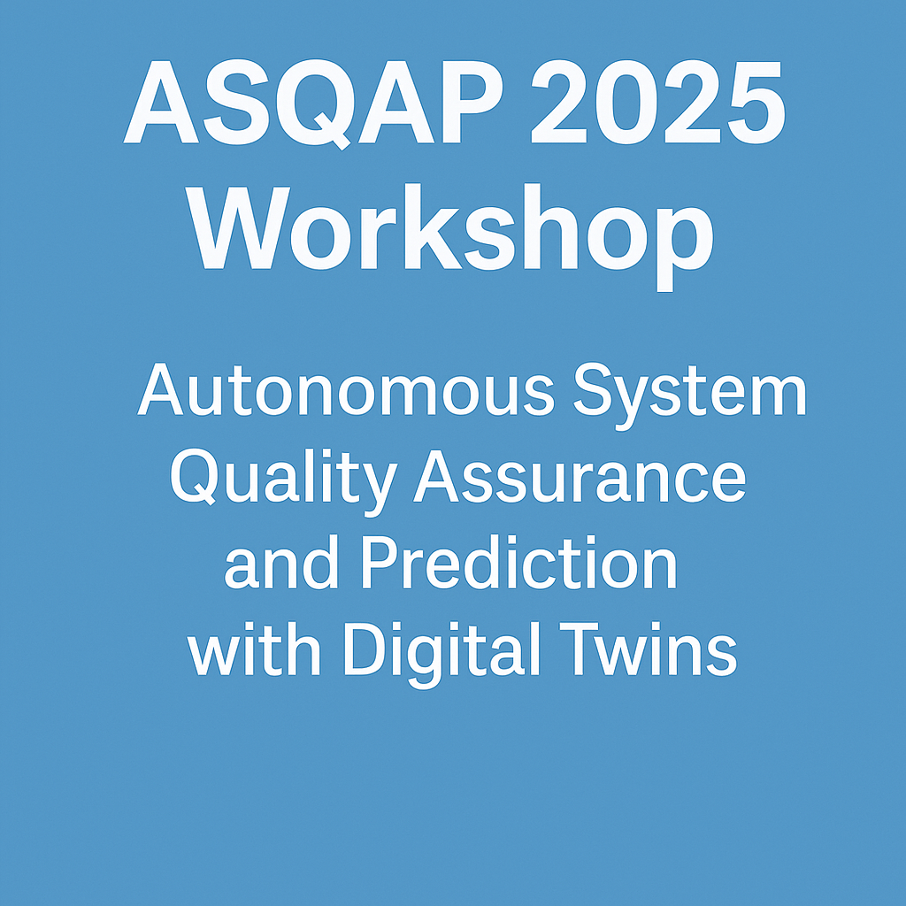
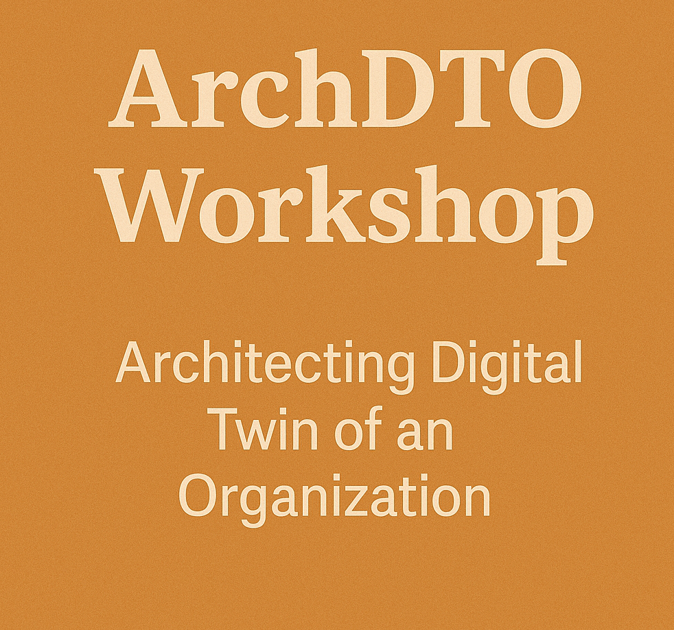

I am Arianna Fedeli
Name: Arianna Fedeli
Profile: Postdoctoral Researcher
Location: Gran Sasso Science Institute, Italy
Email: arianna.fedeli@gssi.it
About me
I'm Arianna Fedeli, a Postdoctoral Researcher @Gran Sasso Science Institute (GSSI) located in L'Aquila, Italy.
I received my PhD from the University of Camerino, in 2024 with a thesis entitled "Model-driven Engineering for IoT Applications: a focus on Reusability and Portability".
My main research interests are Model-driven engineering, domain specific langagues, Internet of Things and Digital Twins.
Besides academic activities, I'm an amateur photographer and a nature lover.
Resume
Current Position
Postdoc @Gran Sasso Science Institute
2024 - Present
Gran Sasso Science Institute, L'Aquila, Italy
- CHANGES Project - Modelling and developing Digital Twins for Cultural Heritage
- COBOL Project - Community-based environmental monitoring through AI and gamification
Foreign Experience
Visiting Researcher
Oct. '23 - Jan. '24
University of Technology, Eindhoven, Netherlands
- Modelling and development of Digital Twins services and domain-specific languages
- Collaborations: Prof. Mark van den Brand & Prof. Loek Cleophas
Visiting Researcher
Oct. '22 - Mar. '23
Polytechnic University, Valencia, Spain
- Modelling and developing integration between IoT and business process: IoT-enhanced business process
- Collaborations: Prof. Pedro Valderas & Prof. Victoria Torres
Education
PhD in Computer Science
2021 - 2024
University of Camerino, Camerino, Italy Degree: Excellent
- Model-driven Engineering for IoT Applications: a focus on Reusability and Portability
- Supervisor: Prof. Andrea Polini
Master in Computer Science @University of Camerino
2018 - 2020
University of Camerino, Camerino, Italy
Bachelor in Informatics @University of Camerino
2014 - 2018
University of Camerino, Camerino, Italy
Projects and Tools
Main research projects I have been involved in
CHANGES Project
CHANGES (Cultural Heritage Active Innovation for Next-Gen Sustainable Society) is a national project funded by the Italian PNRR. It promotes innovation and sustainability in cultural heritage through collaboration among universities, research centers, and institutions. My work focuses on Digital Twin technologies that integrate IoT data, 3D digitization, and AI models to support the monitoring and preservation of artworks and monuments.
COBOL Project
COBOL (COmmunity-Based Organized Littering) is a project by the Gran Sasso Science Institute and the University of Milan “Bicocca”, funded under the PRIN 2022 program. It combines computer science, AI, and civic education to address illegal waste dumping. Through gamification and crowdsourced data from students, the project applies machine learning and computer vision to classify waste and promote environmental awareness.
FloWare - Tool
FloWare introduces a model-driven methodology that supports the reuse and customization of Internet of Things applications. It allows developers to compose, configure, and deploy IoT solutions efficiently by leveraging reusable building blocks and domain-specific models.
X-IoT - Tool
X-IoT aims to improve the portability of IoT applications across heterogeneous platforms. Through a model-driven approach, it enables developers to design applications independently of the underlying IoT infrastructure, automating code generation and deployment for multiple environments.
FloBP - Tool
FloBP integrates IoT data and services into business processes using a model-driven paradigm. It extends BPMN models to represent IoT events and interactions, allowing organizations to design and execute IoT-enhanced processes with higher automation and traceability.
Publications
Some of the most recent scientific publications For the full list, visit my Google Scholar profile
Journal Papers
How low-code platforms support digital twins of processes
Software and Systems Modeling Journal – 2025
A. Fedeli, A. Di Salle, D. Micucci, L. Rebelo, M.T. Rossi, L. Mariani, L. Iovino
FloBP: a model-driven approach for developing and executing IoT-enhanced business processes
Software and Systems Modeling Journal – 2024
A. Fedeli, F. Fornari, A. Polini, B. Re, V. Torres, P. Valderas
X-IoT: a model-driven approach to support IoT application portability across IoT platforms
Computing Journal – 2023
F. Corradini, A. Fedeli, F. Fornari, A. Polini, B. Re, L. Ruschioni
FloWare: a model-driven approach fostering reuse and customisation in IoT applications modelling and development
Software and Systems Modeling Journal – 2023
F. Corradini, A. Fedeli, F. Fornari, A. Polini, B. Re
Conference Papers
A Research Roadmap for Digital Twins of an Organization
International Conference on Business Informatics Research (BIR) – 2025
A. Fedeli, G. Kassem, K. Sherif, E. Laurenzi, A. Polini
Towards a client-based digital twin for decision making: a workforce integration use case
BIR-WS 2025: Workshops and Doctoral Consortium, 24th International Conference on Perspectives in Business Informatics Research (BIR 2025)
G. Kassem, S.G. Grivas, A. Fedeli
Waste management through digital twins and business process modeling
Proceedings of the ACM/IEEE 27th International Conference on Model Driven Engineering Languages and Systems (MODELS) – 2024
A. Di Salle, A. Fedeli, L. Iovino, L. Mariani, D. Micucci, L. Rebelo, M.T. Rossi
Towards a collaborative approach for Digital Twin simulation models comprehension
Proceedings of the ACM/IEEE 27th International Conference on Model Driven Engineering Languages and Systems (MODELS) – 2024
A. Fedeli, D.A. Manrique Negrin
AOAME4Floware: ontology-based feature models for context-aware configurations in IoT applications
BIR Workshops (BIR-WS) – 2024
A. Fedeli, M. Peraic, E. Laurenzi, A. Polini
Events Organization
{kind=link}
{kind=link}

{kind=link}

{kind=link}
{kind=link}